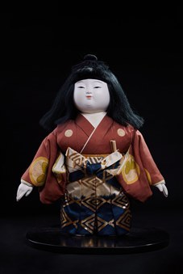

Izukura (Nam) là tác phẩm thuộc dòng Ichimatsu Ningyō – một trong những dòng búp bê truyền thống tiêu biểu của Nhật Bản, nổi tiếng với khả năng tái hiện chân thực hình ảnh trẻ em. Dòng búp bê này ra đời từ thời Edo và đến nay vẫn được yêu thích bởi vẻ đẹp tự nhiên cùng kỹ thuật chế tác tinh xảo.
Tác phẩm khắc họa hình ảnh một bé trai trong bộ kimono truyền thống với hoa văn cổ điển, khuôn mặt tròn phúc hậu, đôi mắt hiền hòa và mái tóc đen đặc trưng. Những đường nét mềm mại cùng tỷ lệ cân đối mang đến cảm giác gần gũi, phản ánh vẻ đẹp hồn nhiên của tuổi thơ Nhật Bản. Mỗi chi tiết, từ khuôn mặt, mái tóc đến trang phục, đều được chế tác thủ công bởi các nghệ nhân lành nghề.
Trong văn hóa Nhật Bản, Ichimatsu Ningyō không chỉ là đồ chơi hay vật trang trí mà còn là biểu tượng của sức khỏe, hạnh phúc và sự trưởng thành bình an của trẻ em. Búp bê thường được lưu giữ trong gia đình hoặc làm quà tặng để gửi gắm những lời chúc tốt đẹp, đồng thời góp phần bảo tồn nghệ thuật chế tác búp bê truyền thống và những giá trị văn hóa được truyền qua nhiều thế hệ.
いづくら（男）は市松人形の作品です。市松人形は、子どもの姿をありのままに再現することで知られる、日本を代表する伝統人形のひとつです。江戸時代に生まれ、自然な美しさと精巧な技によって今も愛され続けています。
本作は、古典文様の伝統的な着物を着た男の子の姿を表しており、ふくよかな丸い顔、穏やかな目元、特徴的な黒髪が印象的です。柔らかな線と均整のとれた比率が親しみやすさを生み、日本の子ども時代の無邪気な美しさを映し出しています。顔、髪、衣装の細部に至るまで、熟練の職人による手仕事で作られています。
日本文化において市松人形は、単なるおもちゃや飾りではなく、子どもの健康、幸福、健やかな成長の象徴です。家庭で大切に受け継がれたり、よき願いを託した贈り物にされたりしてきたほか、伝統的な人形制作の技と世代を超えて伝わる文化的価値を守ることにも貢献しています。